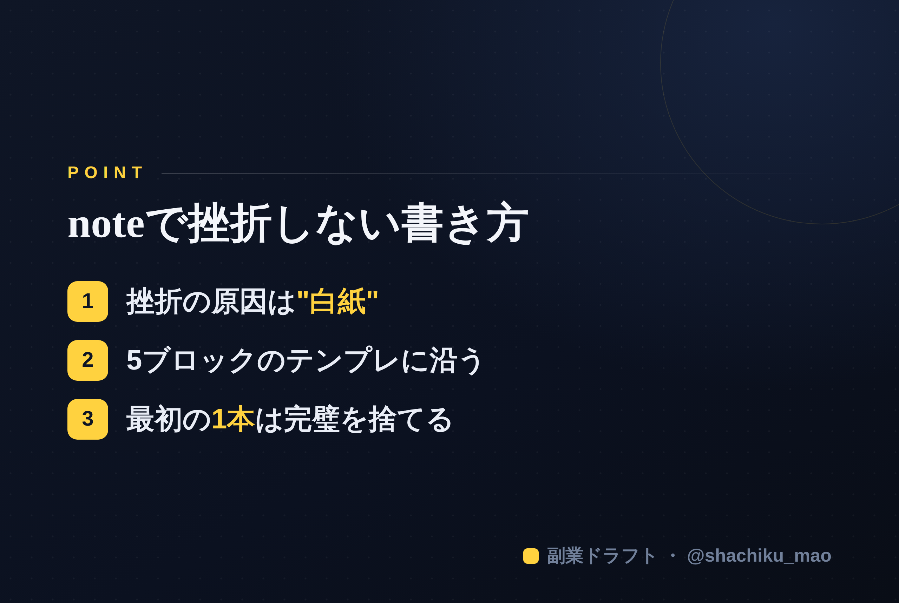

使い方
1. 「タイトルをコピー」→ note のタイトル欄に貼る
2. オレンジのラベルの画像（見出し画像）を note の見出し画像に設定
3. 「本文1をコピー」→ note本文に貼る
4. 青いラベルの位置（本文の途中）に、同じ名前の画像をアップして挿入
5. 「本文2をコピー」→ 続きを貼る
※ 見出しが普通の文字になったら、その行を選んで「大見出し」に設定してください
1. 「タイトルをコピー」→ note のタイトル欄に貼る
2. オレンジのラベルの画像（見出し画像）を note の見出し画像に設定
3. 「本文1をコピー」→ note本文に貼る
4. 青いラベルの位置（本文の途中）に、同じ名前の画像をアップして挿入
5. 「本文2をコピー」→ 続きを貼る
※ 見出しが普通の文字になったら、その行を選んで「大見出し」に設定してください
note初心者が最初の1本で挫折しない書き方テンプレ
見出し画像に設定：note-07.png
「noteを書こうとしたけど、途中で手が止まった」 「何を書けばいいか分からず、下書きのまま放置」
最初の1本でつまずく人は本当に多い。でも、それは文章力の問題ではありません。"型"を知らないだけです。今日は、そのまま埋められるテンプレを渡します。
挫折する理由は「白紙」
真っ白な画面に、いきなり良い文章を書こうとするから止まる。プロのライターでも、白紙からは書きません。先に"型"という枠を用意して、そこに埋めていくだけで、驚くほどスラスラ進みます。
そのまま使える5ブロック・テンプレ
① 共感（冒頭200字） 読者の悩みを、読者の言葉で。「〜で悩んでいませんか？」「私も昔そうでした」。ここで"自分ごと"にさせる。
② 結論・主張 この記事で伝えたい一番大事なこと。先に言い切る。
③ 理由・具体例 なぜそう言えるのか。自分の体験・数字・失敗を入れて説得力を出す。
④ 実践（明日からできること） 読者が今日・明日、実際に動ける手順を1〜3個。ここが記事の価値の核。
⑤ まとめ＋CTA 要点を1〜2文で振り返り、最後に次の行動へ静かに誘導する。
この5ブロックを埋めれば、それだけで1本の記事になります。
最初の1本は「完璧」を捨てる
もう一つ大事なこと。最初から名作を書こうとしないこと。60点で出す。出して、読まれて、反応を見て、次に活かす。公開しない100点より、公開する60点のほうが100倍価値があります。
本文中に挿入：note-07-body.png（この記事のポイント）

この5ブロックのテンプレに沿って、AIがあなたの強みからnote本文の下書きを丸ごと生成してくれるのが 「副業ドラフト」 です。白紙に悩む時間がゼロになります。無料で試せます。
👉 https://note-threadssf.onrender.com
最初の1本は、型があれば怖くない。